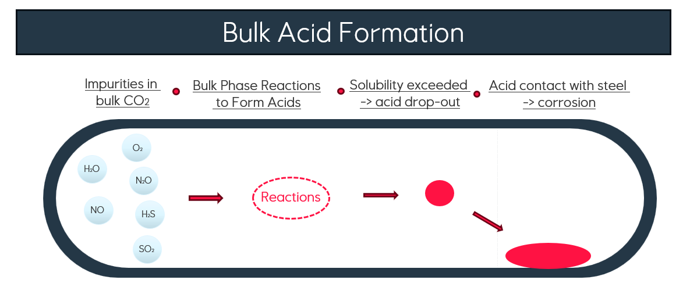
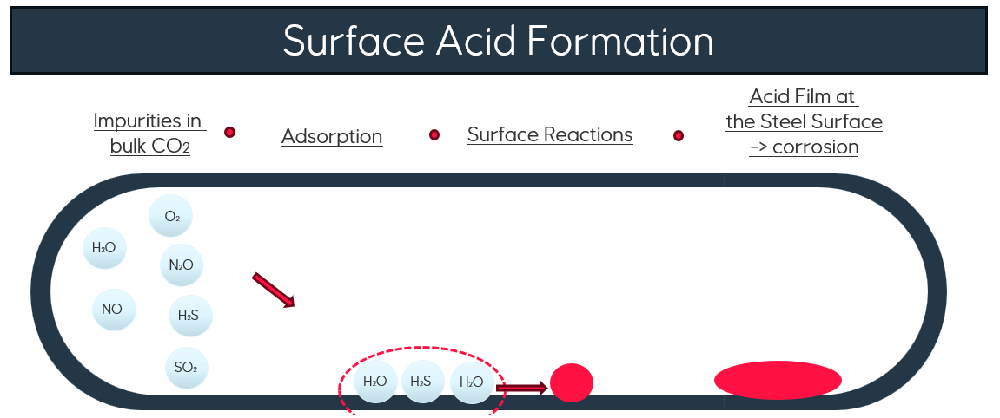
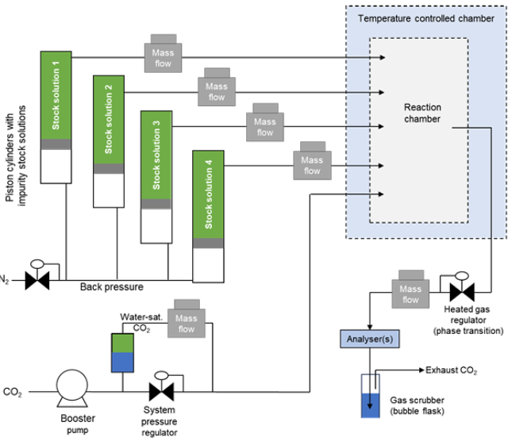
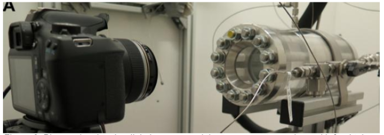

Experiment 1P = 100 bara | T = 25 C
H2S 675 ppm molSO2 72 ppm molH2O 675 ppm molO2 70 ppm mol
No visible fog or acid drop-out; coupon surface changes were observed.
All feed concentrations: ppm mol
Coupling reaction thermodynamics with phase equilibria to screen for corrosive acid formation in dense-phase CO2.
Why it matters
H2S, SO2, NOx, H2O and O2 can react in CO2-rich streams to form corrosive acids. Reactions may occur at the steel surface or in the bulk phase, where an acid-rich liquid can form and create a severe local corrosion environment.


Approach
The Gibbs Minimization Model calculates the single-phase equilibrium composition without prescribing every reaction pathway. Its outlet composition is then flashed with SRK-Van Laar to test for CO2-rich and aqueous-phase partitioning.

Equilibrium reaction pathways
These balanced net reactions illustrate the equilibrium products selected by the Gibbs Minimization Model. They are not prescribed kinetic mechanisms.
3 NO2 + H2O → 2 HNO3 + NO
Net nitric-acid formation pathway at equilibrium.H2S + 2 O2 → H2SO4
SO2 + ½ O2 + H2O → H2SO4
Two net sulfuric-acid formation pathways at equilibrium.Experimental comparison
Stainless-steel autoclave tests at 25 C, with visual monitoring of phase formation.
Experimental setup
Main CO2 flow and individual high-pressure CO2 impurity stock solutions were metered by mass-flow controllers. Water was introduced as CO2 saturated in a water-filled autoclave. A temperature-controlled stainless-steel reaction chamber was monitored by camera, stirred magnetically, and connected to laser-based outlet gas analysis.


No visible fog or acid drop-out; coupon surface changes were observed.
Visible fog and stronger reactions indicate formation of a separate acidic phase.


Quantitative comparison
| Component | Feed [ppm mol] | Outlet [ppm mol] | Gibbs model [ppm mol] |
|---|---|---|---|
| H2S | — | 0 | 0 |
| SO2 | — | 0 | 0 |
| O2 | — | 0 | 0 |
| H2O | 675 | 675 | 673 |
| NO2 | 72 | 70 | 67 |
| NO | — | 4 | 2 |
| H2SO4 | — | — | 3.5 |
| HNO3 | — | — | 0 |
| Component | Feed [ppm mol] | Outlet [ppm mol] | Gibbs model [ppm mol] |
|---|---|---|---|
| H2S | 36 | 0 | 0 |
| SO2 | 32 | 25 | 0 |
| O2 | 90 | 15 | 28 |
| H2O | 20 | 28 | 0 |
| NO2 | 31 | 4 | 31 |
| NO | — | 0 | 56 |
| H2SO4 | — | — | 12 |
| HNO3 | — | — | 0 |
Acid species are highlighted. All values are ppm mol. A dash denotes unavailable or not-measured values. Agreement is qualitative for acid-phase formation in Experiment 2, not quantitative for all outlet components.

Model results
Low acid formation; no separate liquid phase predicted.
Concentrated H2SO4-rich liquid phase predicted, consistent with observed fog.
Outlet-concentration deviations point to kinetic, transport, or surface effects beyond equilibrium.
Model evaluation
Conclusion
Gibbs minimization evaluates many impurities without prescribing individual reactions and correctly identifies the stronger bulk acid-formation tendency in Experiment 2. However, the outlet comparison and Experiment 1 surface changes show that kinetics, non-equilibrium behaviour and surface reactions can dominate in dense-phase CO2. The model should support screening and experiment design; decisions require quantitative validation.